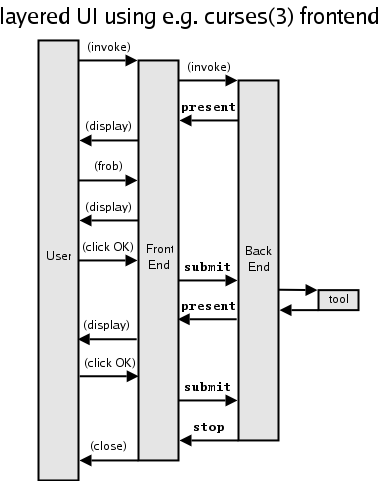
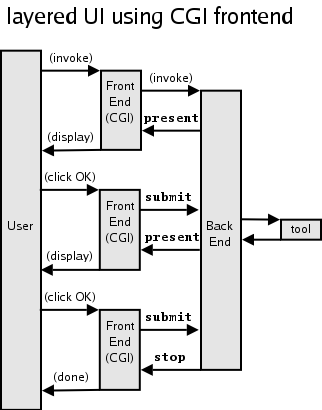
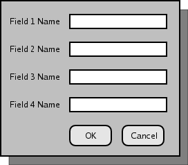
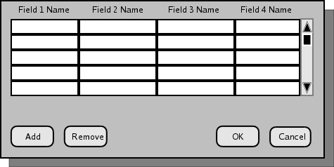

$Id: dfui.html,v 1.2 2004/07/17 01:50:34 cpressey Exp $
This document describes a user interface (UI) abstraction which allows an
application to communicate with a user through any number of kinds
of concrete user interfaces, such as curses, GTK+, or a
web browser.
This abstraction should be suitable for presenting the DragonFly system installer to the user; however it need not and should not be limited to only the installer. Many other tasks in DragonFly, such as system configuration and package installation, could and for the sake of consistency should use the same UI.
The DFUI abstraction isolates the semantics of user interation from the concrete details of it, similar to a Model View Controller abstraction. Such a system is split into frontend and backend:
fdisk.)The backend tells the frontend what kind of conversation to hold with the user; the frontend tells the backend the user's ultimate decisions.
The backend talks to the frontend in terms of abstract user interface elements. It tells the frontend nothing about how the UI should be presented, only the bare essentials of what it must convey. Likewise, the frontend talks to the backend in terms of data. It keeps trivia about the user (like what language they are using) to itself. In this way, we maintain component isolation: the backend is concerned only with the semantics of the user interaction, while the frontend is concerned only with its implementation.
The frontend may be constructed in almost any manner. It may be a
curses program, or it may be a CGI. This presents a unique barrier, namely that the
frontend might be either a single, long-running process or a series of short-running
processes. This essentially requires a concurrently design where the frontend and backend
exist in seperate processes that exchange messages using IPC.
The contrast between the curses scenario and the CGI scenario
is illustrated below.
|
 |
 |
This abstraction gives us several benefits:
Each of the messages sent between the frontend and the backend consists of one piece of data. Before getting to the messages themselves, we'll examine the data types in use.
Many of the other data types each have an id.
An id is a key which identifies the object to both the frontend and the backend. It should be unique across all similar objects in the same container. (i.e. a form id should be unique across all forms in a session, a field id should be unique across all fields in a form, etc.)
Id's are implemented as a short alphanumeric (plus underscores) strings
such as disk_select_menu.
Many of the other data types each have an info block.
In contrast to the id, which the computer uses to tell objects apart, an info block is for the human operator's benefit. Each info block contains:
The basic unit of interaction is a form. While typically displayed as a familiar electronic version of a paper fill-out form, it is defined abstractly enough to not pose any obstacles should we need to deal with other media. However, in this document we will give typical examples using a familiar GUI interpretation.
Each form consists of:
The multiplicity flag determines whether there is a single set of data displayed on the form (multiplicity = false), or multiple sets of data (multiplicity = true). The former resembles a 'dialog box' in a typical UI. The latter resembles a spreadsheet or database entry form, with zero or more 'rows' of a data, and facilities for the user to add, remove, etc rows. Examples of these two different layout styles are shown below (note of course that these are only examples - the frontend may interpret them any reasonable way it likes.)
|
multiplicity = false  |
multiplicity = true  |
Each field describes a piece of data that the user can view and possibly manipulate. In a typical GUI, fields are rendered as text boxes and similar widgets. Each field has:
A form with zero fields has only actions, and might typically look like a menu or informative-only dialog box.
Each action describes an action that can be taken. In a typical GUI, actions are rendered as buttons that can be clicked. Each action consists of:
Each dataset describes a set of data that is displayed or entered into a form. In a form with more than zero fields, a multiplicity = false form has exactly one dataset, while a multiplicity = true form may have more than one. A form with zero fields must have zero datasets.
Each dataset consists of a set of one celldata for each field of the form.
A celldata represents a value entered into a field on a form, either as a default value by the backend, or by the user's choice.
Each celldata consists of:
The data type of all celldata values, as far as DFUI is concerned, is text. The backend may convert the text into a more semantically meaningful format, such as floating-point values, internally.
Each field has zero or more options. These are supplied values that the user may choose to place in the field.
The semantics of options in combination with the editable flag are summarized here:
| Editable flag | Number of Options | Semantics |
|---|---|---|
| true | zero | user may manually enter any value in field |
| true | one or more | user may manually enter any value in field, or may select any option to fill field with ("combo box") |
| false | zero | user may not enter data into field in any fashion |
| false | one or more | user may not manually enter values into field, but may select an option to fill the field with ("list box") |
Each response describes a user's decision. Each response consists of:
The form id indicates the form that this is a response to.
The action id indicates the action that the user executed which caused this response.
The datasets contain the user's choices. When the form is multiplicity = false, there should be exactly one dataset; when the form is multiplicity = true, there should be one dataset per "row" of data that the user entered. Either way, there should always be one celldata per field of the form in each dataset.
A progress represents some task which takes a relatively long time to complete; in a typical GUI it would be implemented by a progress bar. Each progress consists of:
The amount is an integer which ranges from 0 to 100, where 0 indicates no progress has been made, and 100 indicates that the task is finished.
Progresses do not have responses, but they may be cancelled.
See dfui_property.
The backend may send the following kinds of messages to the frontend:
present(form)prog_begin(progress)prog_update(progress)prog_end()stop()The frontend may send the following kinds of replies to the backend:
submit(response)continue()cancel()abort()These may, in theory, be asynchronous: the backend may, for example, send several
present messages before receiving any submit replies,
so long as there is some way to identify which submits are associated with
which presents (i.e. the form id).
However, in practice, while some UI's support concurrently displaying multiple UI elements in a natural fashion (typified by "windows",) others do not. So to begin, we will limit ourselves by enforcing a sychronous discipline: each message from the backend must be replied by a reply from the frontend before the next message from the backend is sent.
present MessageThe present message carries a form as a payload. Upon
receipt of this message, the frontend should display the form and let the user
manipulate it.
The frontend may then reply to a present message with:
submit reply with the corresponding form id, which
indicates that the user chose an action from the form; orabort reply, which indicates something catastrophic happened
and that the backend should halt everything.submit ReplyThe submit reply carries a response as a payload. It should
only occur after a present message.
prog_begin MessageA prog_begin message carries a progress as a payload
and indicates that a progress has begun.
The frontend may reply to a prog_begin message with:
continue reply, indicating all is well; orabort reply, indicating the backend should halt.prog_update MessageA prog_update message carries a progress as a payload
and indicates that the state of progress has changed.
The frontend may reply to a prog_update message with:
continue reply, indicating all is well;cancel reply, indicating that the user cancelled the
progress; orabort reply, indicating the backend should halt.prog_end MessageA prog_end message indicates that a progress is finished.
It has no payload.
The frontend may reply to a prog_end message with:
continue reply, indicating all is well; orabort reply, indicating the backend should halt.stop MessageThe stop message has no payload; it simply tells the frontend
that the backend has finished processing. The frontend may exit, if it is a
long-running process, or it may simply display a 'finished' page, if it is a
short-running CGI process.
| curses frontend | CGI frontend |
if backend is running
error "backend is already running"
start backend
while not done {
wait for a message from backend
if the message is 'stop'
done := TRUE
else if the message is 'present' {
display a form based on the message
let the user interact with the form
until the user selects an action
send 'submit' message to backend
}
}
|
if the request method was 'POST' {
create 'submit' message from POSTed data
send 'submit' message to backend
} else {
if backend is running
error "backend is already running"
start backend
}
wait for a message from backend
if the message is 'stop'
display 'done' page
else if the message is 'present'
display a form based on the message
|
Let us consider now a library, libdfui, which implements this abstraction:
From the backend's point of view, the useful functions in this library are as follows. Each function returns an error response (1 = success, 0 = failure.)
dfui_be_start(struct dfui_connection *c)
Connect to the frontend and return a handle to it in c. XXX this function
also needs to know what frontend to try to connect to and how somehow.
dfui_be_present(struct dfui_connection *c, struct dfui_form *f, struct dfui_response *r)
Ask the frontend on the other end of c to present the form f, wait
for a submit reply, and return the response in r
dfui_be_prog_begin(struct dfui_connection *c, struct dfui_progress *p)
Ask the frontend on the other end of c to start showing the progress p.
dfui_be_prog_update(struct dfui_connection *c, struct dfui_progress *p)
Ask the frontend on the other end of c to update the progress p.
dfui_be_prog_end(struct dfui_connection *c)
Ask the frontend on the other end of c to stop showing any progress.
dfui_be_stop(struct dfui_connection *c)
Tell the frontend on the other end of c to stop, and close the connection.
Notably, there are also functions for constructing struct dfui_forms and its
brethren, and for intrerpreting and freeing struct dfui_responses.
From the frontend's point of view, the useful functions in this library are as follows. Like the backend, these all return failure/success values.
dfui_fe_start(struct dfui_connection *c)
Connect to the backend XXX somehow.
dfui_fe_receive(struct dfui_connection *c, char *msgtype, void **payload)
Wait for the backend to send a message, then return the message type in *msgtype
and the message itself in *payload. It is the frontend's reponsibility to cast the
payload to the correct data type (based on *msgtype,) and to free it at some later
time if it is not NULL.
dfui_fe_submit(struct dfui_connection *c, struct dfui_response *r)
Send a submit reply to the backend.
dfui_fe_progress_continue(struct dfui_connection *c)
Send a continue reply to the backend.
dfui_fe_progress_cancel(struct dfui_connection *c)
Send a cancel reply to the backend.
dfui_fe_abort(struct dfui_connection *c)
Send an abort reply to the backend.
dfui_fe_stop(struct dfui_connection *c)
Close the connection.
Notably, there are also functions for intrerpreting struct dfui_forms et al,
and for constructing and freeing struct dfui_responsess.
The IPC used by libdfui, through which the frontend and backend exchange messages and replies, is a wrapper around the CAPS mechanism. CAPS is the lightweight messaging abstraction Matt Dillon has introduced into DragonFly.
CAPS was chosen for two reasons: it fulfils DFUI's needs as an IPC mechanism, and DFUI provides a good "real world" test for CAPS.
The implementation of libdfui in CAPS is fairly straightforward, with one significant twist.
Despite the backend sending 'requests' and the frontend sending 'replies', the backend is a CAPS service, while the frontend is a CAPS client. This is necessary as the frontend could be a series of short-lived processes. A CAPS service cannot receive a message in one process and reply to it in another.
We implement this role reversal by having each message exchange, as described above, be implemented by two full CAPS message-reply exchange cycles internally.
That is, for a backend to send a message to the frontend, the backend waits until it receives a generic 'client ready' message from the frontend, then sends it's request as a CAPS reply. It then waits for another message from the frontend (the DFUI reply) and replies to that with a generic 'service ready' message.